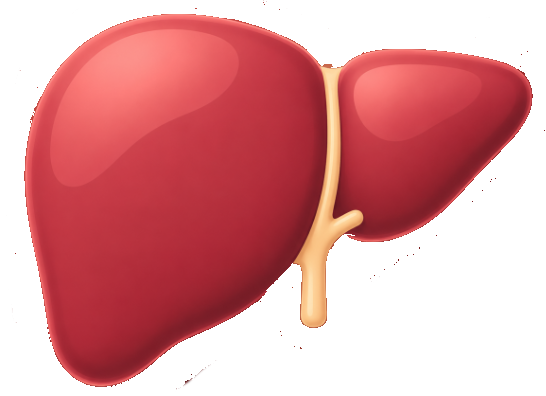
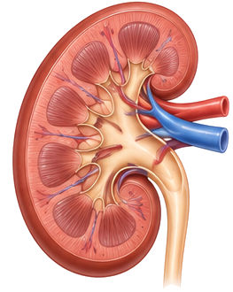
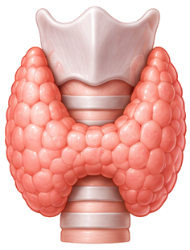
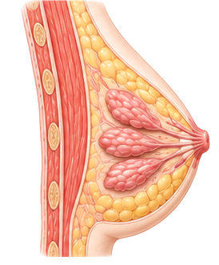
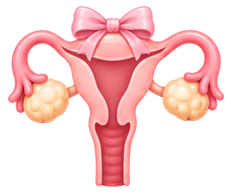
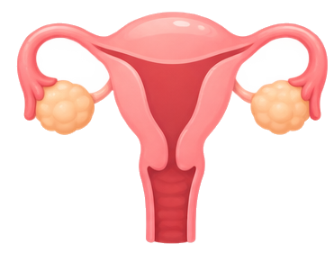
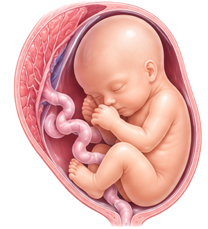
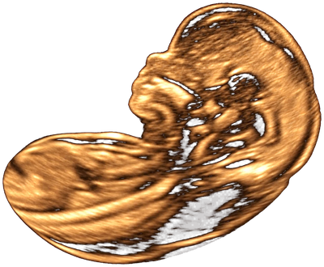
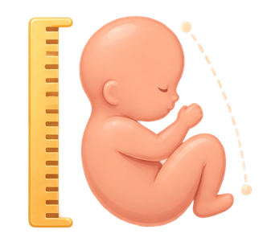

Laudos disponíveis
Medicina Interna
abdome, rins, tireoide, próstata...
Abdome Total
Fígado, vesícula e vias biliares, pâncreas, rins, bexiga, grandes vasos e baço — com quantificação de esteatose hepática pelo método QUS.

Rins e Vias Urinárias
Rim direito e esquerdo, bexiga e volume urinário pré e pós-miccional.

Tireóide com Doppler
Lobos direito e esquerdo, istmo com volume calculado automaticamente, e estudo Doppler da artéria tireoidea inferior.
Ginecológico
transvaginal, pélvico, mamas, folículos antrais...
Mamas e Axilas
Ultrassonografia das mamas e axilas — cistos, nódulos, fibroadenoma e linfonodos, com laudo montado automaticamente.

Monitorização Folicular (FIV)
Todos os folículos dominantes medidos, útero e endométrio, exame único de liberação para punção folicular.

Pélvico Infantil
Propedêutica de puberdade precoce — escolha a faixa etária e o laudo já traz os valores de referência de útero e ovários, com Doppler da artéria uterina opcional.
Rastreamento de Ovulação
Útero e ovários, folículos dominantes e acompanhamento do ciclo visita a visita, até a identificação do corpo lúteo.

Transvaginal
Útero, ovários e anexos — medidas com laudo montado automaticamente.
Obstétrico

Obstétrico Geral
Biometria e crescimento fetal, com Doppler, Perfil Biofísico Fetal e medida do colo uterino opcionais.

Obstétrico com Translucência Nucal
Translucência nucal e risco de Síndrome de Down — Doppler das uterinas e medida do colo uterino opcionais, conforme o pedido médico.
Obstétrico de 1º Trimestre
Translucência nucal, biometria fetal e marcadores de aneuploidia — laudo montado automaticamente.
Morfológico de 1º Trimestre
Avaliação morfológica fetal, marcadores de trissomias, Doppler das uterinas e rastreamento de pré-eclâmpsia.

Morfológico de 2º Trimestre
Avaliação morfológica fetal órgão a órgão, biometria estendida e cordão umbilical — laudo montado automaticamente.